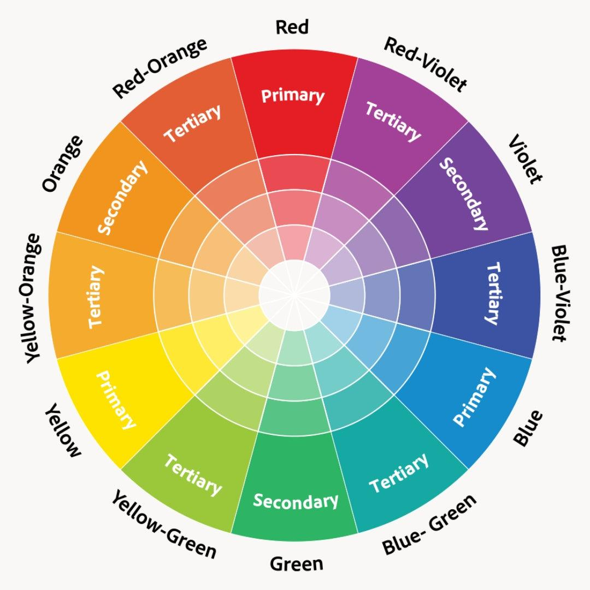
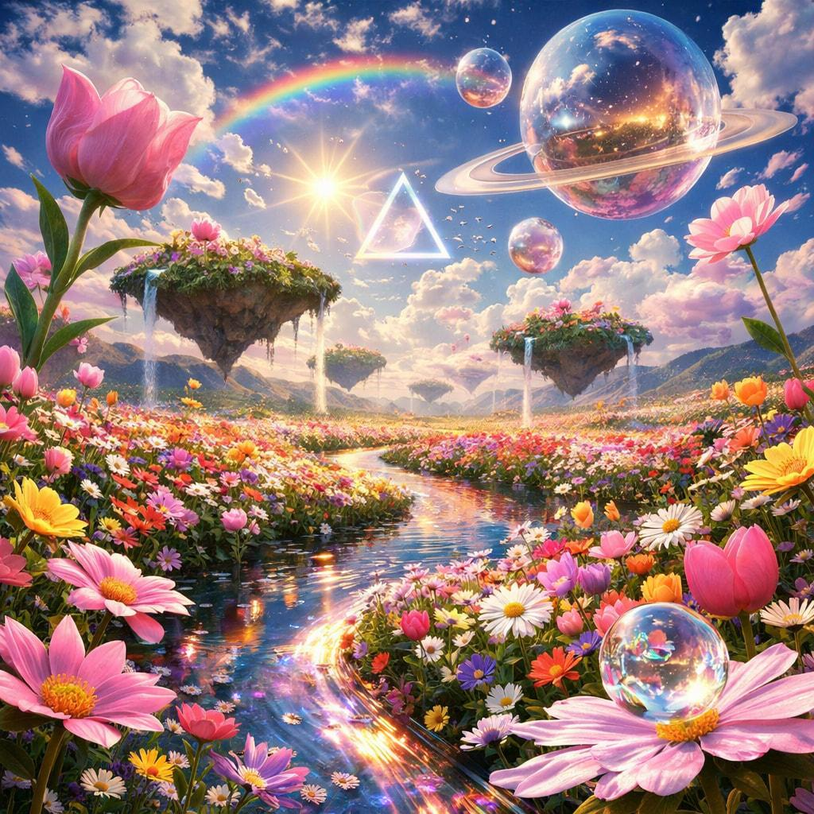
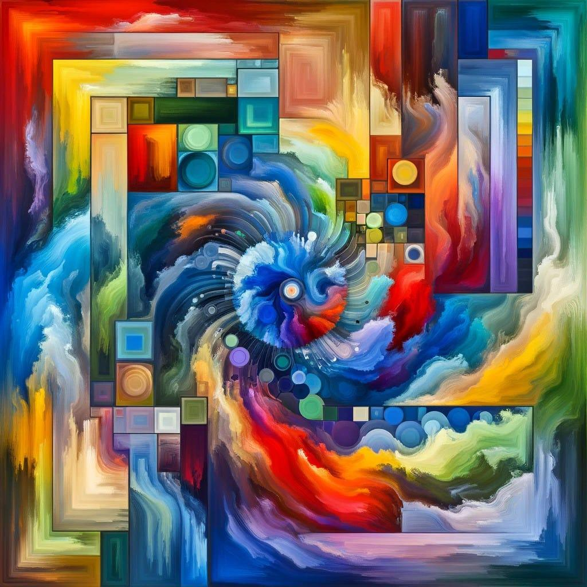
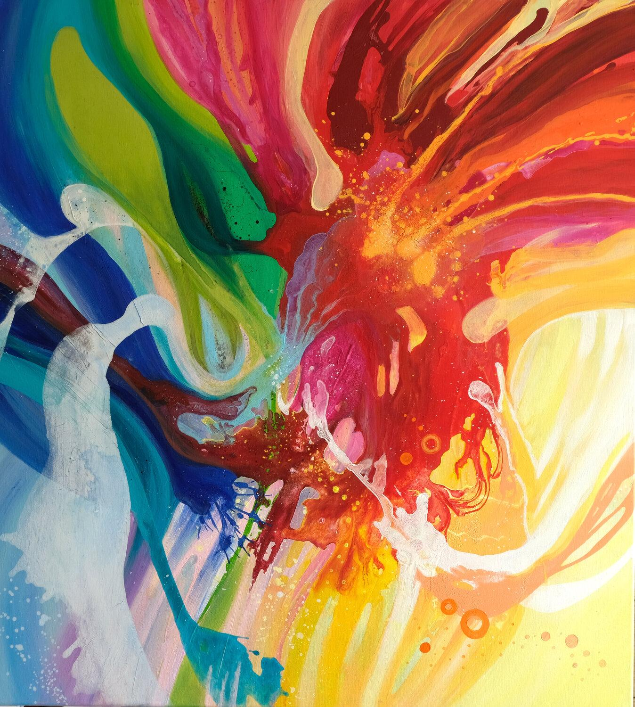

WELCOME TO THE WORLD OF COLORS
عالم الألوان
لكل لون حكاية، ولكل درجة إحساس!
رحلة إلى عالم الألوان
الألوان لغة بصرية جميلة نستخدمها للتعبير عن المشاعر والأفكار. فهي تمنح الأعمال الفنية الحياة، وتساعدنا على رؤية العالم بطريقة مختلفة. ومن خلال فهم نظرية الألوان نستطيع اكتشاف أسرار التناغم والجمال في اللوحات الفنية.
اكتشفي الدائرة اللونية
الدائرة اللونية تساعدنا على فهم العلاقات بين الألوان وكيفية تنسيقها معًا.

الألوان الأساسية
الأحمر والأصفر والأزرق، وهي أساس تكوين الألوان الأخرى في النموذج التقليدي.
الألوان الثانوية
تنتج من مزج لونين أساسيين، مثل البرتقالي والأخضر والبنفسجي.
الألوان الثلاثية
تنتج من مزج لون أساسي مع لون ثانوي مجاور له.
سحر الألوان في الفن
تأملي كيف تصنع الألوان عوالم مليئة بالجمال والإبداع.

تناغم الألوان
عندما تلتقي الألوان بانسجام، تولد لوحة مريحة للعين.

قوة التباين
التباين يجعل العناصر الفنية أكثر وضوحًا وجاذبية.

عالم من الخيال
تمنح الألوان الفنان مساحة واسعة للتعبير والابتكار.
شاهدي و استمتعي
كيف يمكن للفنان استخدام تباين وتقارب الألوان في رسم الانمي.